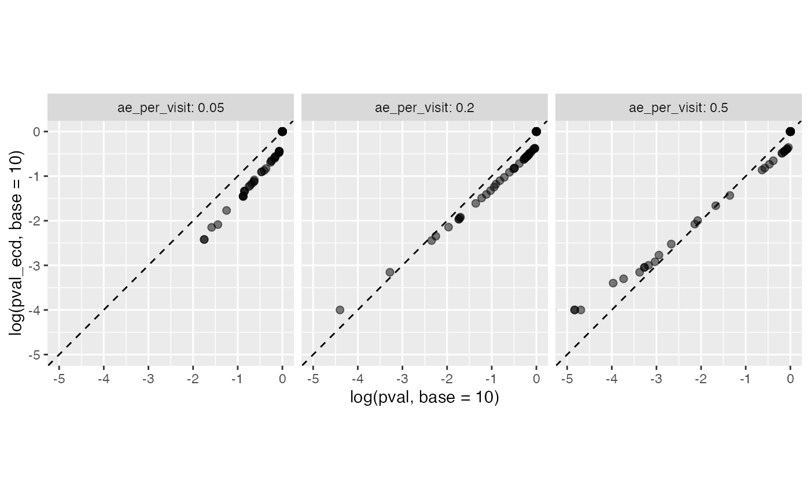
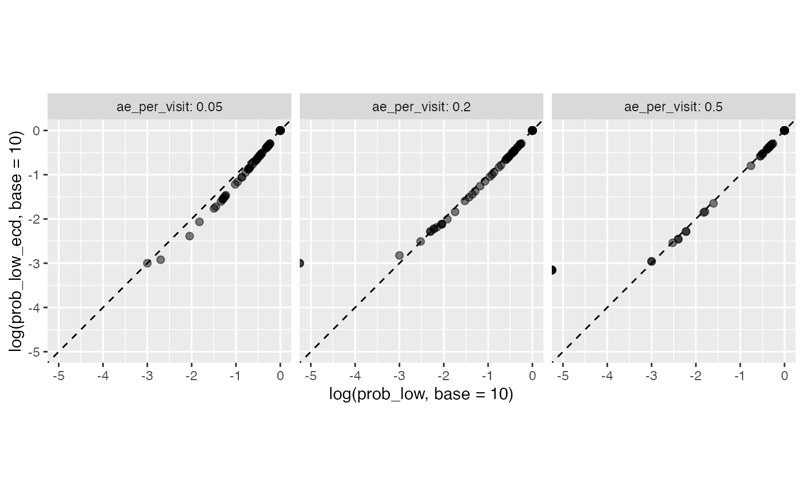

Perhaps there might be scenarios in which one prefers to use a parametric test vs the non-parametric bootstrap-based resampling method to calculate AE under-reporting. simaerep provides a function that does bootstrap resampling of the entire study preserving the actual site parameters such as number of patients and visit_med75.
Using this pool we can check whether the p-values calculated by poisson.test() represent accurate probabilities.
We simulate three studies with varying ae per visit rate and then use all functions we already introduced.
df_visit1 <- sim_test_data_study(
n_pat = 1000,
n_sites = 100,
frac_site_with_ur = 0.2,
ur_rate = 0.5,
max_visit_mean = 20,
max_visit_sd = 4,
ae_per_visit_mean = 0.5
)
df_visit1$study_id <- "ae_per_visit: 0.5"
df_visit2 <- sim_test_data_study(
n_pat = 1000,
n_sites = 100,
frac_site_with_ur = 0.2,
ur_rate = 0.5,
max_visit_mean = 20,
max_visit_sd = 4,
ae_per_visit_mean = 0.2
)
df_visit2$study_id <- "ae_per_visit: 0.2"
df_visit3 <- sim_test_data_study(
n_pat = 1000,
n_sites = 100,
frac_site_with_ur = 0.2,
ur_rate = 0.5,
max_visit_mean = 20,
max_visit_sd = 4,
ae_per_visit_mean = 0.05
)
df_visit3$study_id <- "ae_per_visit: 0.05"
df_visit <- bind_rows(df_visit1, df_visit2, df_visit3)
df_site <- site_aggr(df_visit)
df_sim_sites <- sim_sites(df_site, df_visit)
df_visit## # A tibble: 58,397 x 9
## patnum site_number is_ur max_visit_mean max_visit_sd ae_per_visit_me… visit
## <chr> <chr> <lgl> <dbl> <dbl> <dbl> <int>
## 1 P0000… S0001 TRUE 20 4 0.25 1
## 2 P0000… S0001 TRUE 20 4 0.25 2
## 3 P0000… S0001 TRUE 20 4 0.25 3
## 4 P0000… S0001 TRUE 20 4 0.25 4
## 5 P0000… S0001 TRUE 20 4 0.25 5
## 6 P0000… S0001 TRUE 20 4 0.25 6
## 7 P0000… S0001 TRUE 20 4 0.25 7
## 8 P0000… S0001 TRUE 20 4 0.25 8
## 9 P0000… S0001 TRUE 20 4 0.25 9
## 10 P0000… S0001 TRUE 20 4 0.25 10
## # … with 58,387 more rows, and 2 more variables: n_ae <int>, study_id <chr>
df_site## # A tibble: 300 x 6
## study_id site_number n_pat n_pat_with_med75 visit_med75 mean_ae_site_me…
## <chr> <chr> <int> <int> <dbl> <dbl>
## 1 ae_per_visit… S0001 10 7 15 0.429
## 2 ae_per_visit… S0002 10 9 17 0.222
## 3 ae_per_visit… S0003 10 9 19 0.444
## 4 ae_per_visit… S0004 10 10 17 0.6
## 5 ae_per_visit… S0005 10 9 14 0.222
## 6 ae_per_visit… S0006 10 10 14 0.2
## 7 ae_per_visit… S0007 10 10 15 0.3
## 8 ae_per_visit… S0008 10 10 14 0.5
## 9 ae_per_visit… S0009 10 8 18 0.25
## 10 ae_per_visit… S0010 10 10 15 0.4
## # … with 290 more rows
df_sim_sites## # A tibble: 300 x 9
## study_id site_number n_pat n_pat_with_med75 visit_med75 mean_ae_site_me…
## <chr> <chr> <int> <int> <dbl> <dbl>
## 1 ae_per_… S0001 10 7 15 0.429
## 2 ae_per_… S0002 10 9 17 0.222
## 3 ae_per_… S0003 10 9 19 0.444
## 4 ae_per_… S0004 10 10 17 0.6
## 5 ae_per_… S0005 10 9 14 0.222
## 6 ae_per_… S0006 10 10 14 0.2
## 7 ae_per_… S0007 10 10 15 0.3
## 8 ae_per_… S0008 10 10 14 0.5
## 9 ae_per_… S0009 10 8 18 0.25
## 10 ae_per_… S0010 10 10 15 0.4
## # … with 290 more rows, and 3 more variables: mean_ae_study_med75 <dbl>,
## # pval <dbl>, prob_low <dbl>sim_studies() reproduces each study a hundred times using bootstrap resampling maintaining the number of patients and the visit_med75 of each site.
## Warning: Strategy 'multiprocess' is deprecated in future (>= 1.20.0). Instead,
## explicitly specify either 'multisession' or 'multicore'. In the current R
## session, 'multiprocess' equals 'multisession'.## Warning in supportsMulticoreAndRStudio(...): [ONE-TIME WARNING] Forked
## processing ('multicore') is not supported when running R from RStudio
## because it is considered unstable. For more details, how to control forked
## processing or not, and how to silence this warning in future R sessions, see ?
## parallelly::supportsMulticore
df_sim_studies <- sim_studies(df_visit, df_site,
r = 100,
parallel = TRUE,
poisson_test = TRUE,
prob_lower = TRUE,
.progress = FALSE)
df_sim_studies## # A tibble: 30,000 x 8
## r study_id site_number visit_med75 n_pat_with_med75 n_pat_study pval
## <dbl> <chr> <chr> <dbl> <int> <dbl> <dbl>
## 1 1 ae_per_… S0001 15 7 885 0.342
## 2 1 ae_per_… S0002 17 9 766 0.0772
## 3 1 ae_per_… S0003 19 9 580 1
## 4 1 ae_per_… S0004 17 10 765 1
## 5 1 ae_per_… S0005 14 9 927 1
## 6 1 ae_per_… S0006 14 10 926 0.300
## 7 1 ae_per_… S0007 15 10 882 1
## 8 1 ae_per_… S0008 14 10 926 1
## 9 1 ae_per_… S0009 18 8 670 1
## 10 1 ae_per_… S0010 15 10 882 1
## # … with 29,990 more rows, and 1 more variable: prob_low <dbl>get_ecd_values() uses the p-value distribution in the dataframe returned from sim_studies() to train a empirical cumulative distribution function for each study which is then used to calculate the probability of a specific p-value or lower from the poisson.test p-value returned from sim_sites()
Note: Dots on the edge of the graph that are cut off have zero value for the corresponding axis.
df_check_pval <- get_ecd_values(df_sim_studies, df_sim_sites, val_str = "pval")
df_check_pval## # A tibble: 300 x 10
## study_id site_number n_pat n_pat_with_med75 visit_med75 mean_ae_site_me…
## <chr> <chr> <int> <int> <dbl> <dbl>
## 1 ae_per_… S0001 10 7 15 0.429
## 2 ae_per_… S0002 10 9 17 0.222
## 3 ae_per_… S0003 10 9 19 0.444
## 4 ae_per_… S0004 10 10 17 0.6
## 5 ae_per_… S0005 10 9 14 0.222
## 6 ae_per_… S0006 10 10 14 0.2
## 7 ae_per_… S0007 10 10 15 0.3
## 8 ae_per_… S0008 10 10 14 0.5
## 9 ae_per_… S0009 10 8 18 0.25
## 10 ae_per_… S0010 10 10 15 0.4
## # … with 290 more rows, and 4 more variables: mean_ae_study_med75 <dbl>,
## # pval <dbl>, prob_low <dbl>, pval_ecd <dbl>
df_check_pval %>%
ggplot(aes(log(pval, base = 10), log(pval_ecd, base = 10))) +
geom_point(alpha = 0.5, size = 2) +
facet_wrap(~ study_id) +
geom_abline(slope = 1, linetype = 2) +
coord_cartesian( xlim = c(-5,0), ylim = c(-5,0) ) +
theme(aspect.ratio = 1)
We can see that the p-values from poisson.test (x-axis) more or less match the probability with which they are represented in the resampled studies (y-axis), but there is some skewness to their relationship.
Note: Dots on the edge of the graph that are cut off have zero value for the corresponding axis. For the tie simulations using 1000 repeats the smallest value greater zero we get for prob_low is 0.001 (1e-3).
df_check_prob <- get_ecd_values(df_sim_studies, df_sim_sites, val_str = "prob_low")
df_check_prob## # A tibble: 300 x 10
## study_id site_number n_pat n_pat_with_med75 visit_med75 mean_ae_site_me…
## <chr> <chr> <int> <int> <dbl> <dbl>
## 1 ae_per_… S0001 10 7 15 0.429
## 2 ae_per_… S0002 10 9 17 0.222
## 3 ae_per_… S0003 10 9 19 0.444
## 4 ae_per_… S0004 10 10 17 0.6
## 5 ae_per_… S0005 10 9 14 0.222
## 6 ae_per_… S0006 10 10 14 0.2
## 7 ae_per_… S0007 10 10 15 0.3
## 8 ae_per_… S0008 10 10 14 0.5
## 9 ae_per_… S0009 10 8 18 0.25
## 10 ae_per_… S0010 10 10 15 0.4
## # … with 290 more rows, and 4 more variables: mean_ae_study_med75 <dbl>,
## # pval <dbl>, prob_low <dbl>, prob_low_ecd <dbl>
df_check_prob %>%
ggplot(aes(log(prob_low, base = 10), log(prob_low_ecd, base = 10))) +
geom_point(alpha = 0.5, size = 2) +
facet_wrap(~ study_id) +
geom_abline(slope = 1, linetype = 2) +
coord_cartesian( xlim = c(-5,0), ylim = c(-5,0) ) +
theme(aspect.ratio = 1)
Here we see that the probabilities from the site simulations (x-axis) perfectly match probability with which they are represented in the resampled studies (y-axis).
We see that the bootstrap method gives us more accurate probabilities than the p-values derived from poisson.test even though the AE generation in the sample data follows a strict poisson process. For real clinical trial data with different types of studies for which it is not clear whether AE generation is truly based on a pure poisson process we recommend to use the bootstrap method. If poisson.test shall be used we recommend checking the applicability as we just demonstrated on clinical data set.